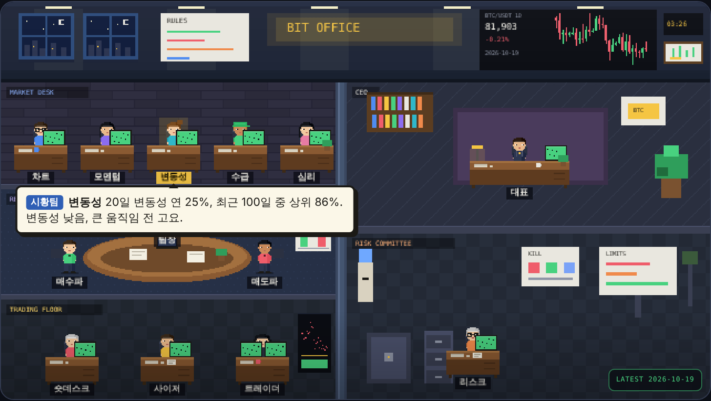
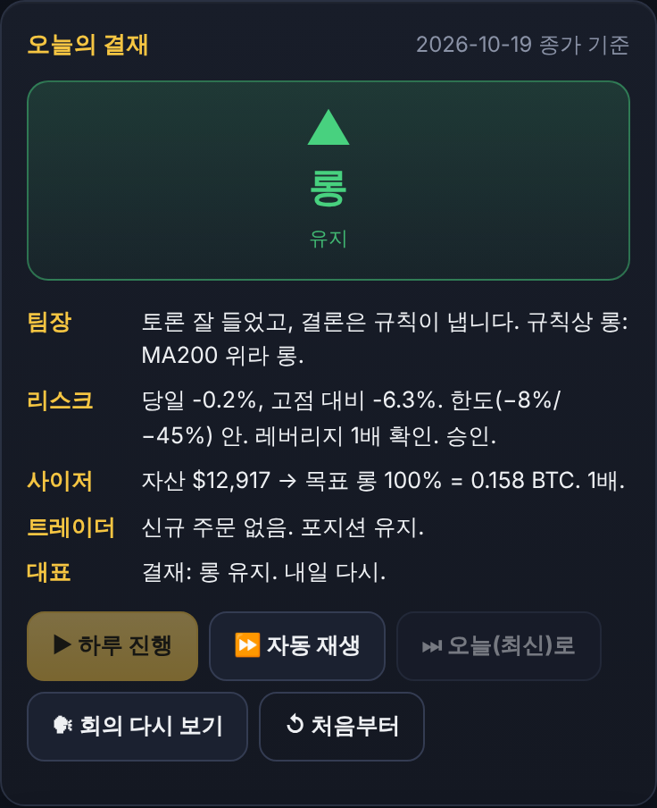
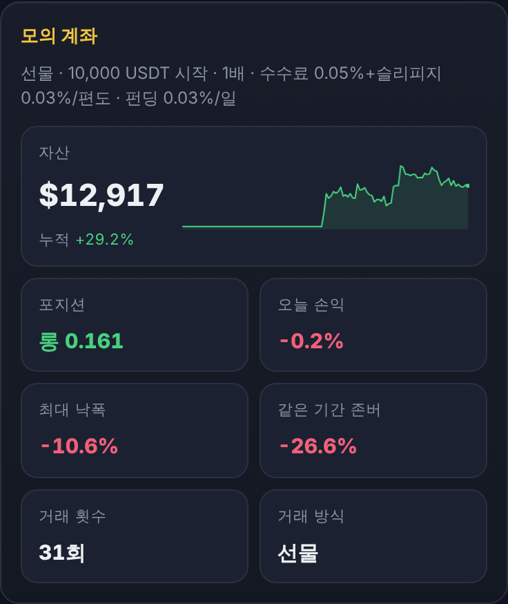
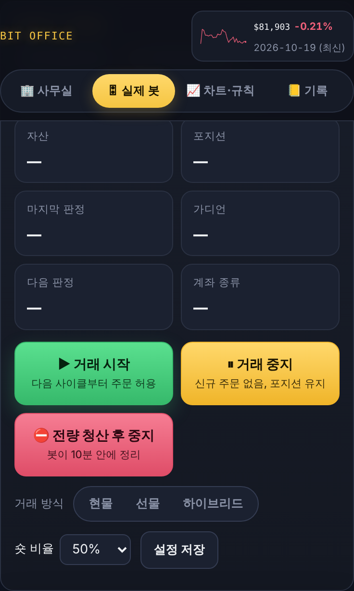
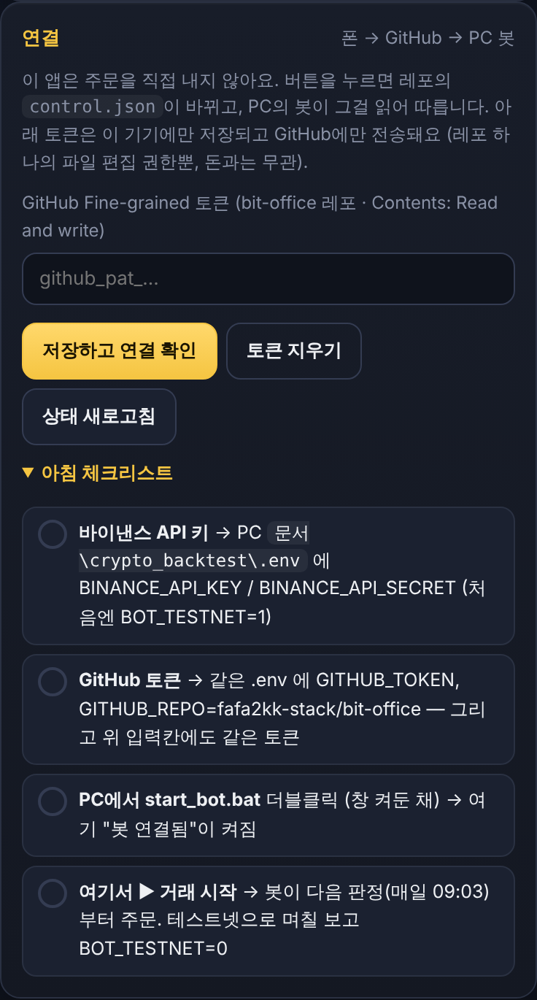
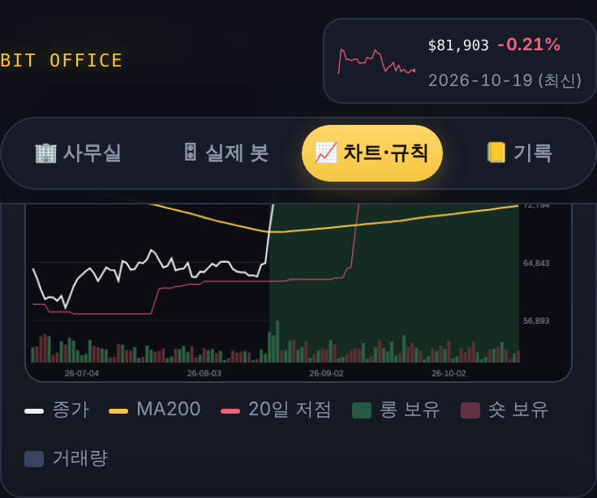

직원 13명이 회의하고 규칙으로 결재하는 비트코인 자동매매. 프로그램이 어떻게 생겼고, 하루가 어떻게 돌아가고, 내가 뭘 누르면 되는지를 한 장에 모았습니다.
status.jsoncontrol.json일봉 전략이라 하루에 한 번만 판정합니다. 나머지 시간엔 폰의 지시만 확인하며 기다립니다.
status.json으로 올립니다. 폰 앱 실제 봇 탭에 바로 뜹니다.control.json을 읽어 거래 시작/중지, 전량 청산, 거래 방식 변경을 반영합니다. 전량 청산은 기다리지 않고 바로 실행합니다.열쇠 두 개를 꽂는 작업입니다. 바이낸스 키는 봇이 거래소에 들어가는 열쇠, GitHub 토큰은 봇과 폰이 같은 우체통을 쓰는 열쇠.
바이낸스 계정으로 demo.binance.com 로그인(가상 USDT 자동 지급, 신분증 인증 불필요) → 우상단 계정 아이콘 → API Management → Create API → System generated → OTP → Key / Secret 복사 (Secret은 그 화면에서만 보임). 권한은 Enable Futures만 켜고 출금은 절대 켜지 않습니다. 문서\crypto_backtest\.env를 메모장으로 열어 BINANCE_API_KEY=, BINANCE_API_SECRET= 뒤에 붙여넣고 저장. BOT_TESTNET=1, BOT_DEMO=1은 그대로 (가짜 돈). 자세한 순서는 PC의 TOMORROW.md 1번.
github.com → Settings → Developer settings → Fine-grained tokens → Generate. Repository access는 bit-office만, Permissions는 Contents: Read and write만, 만료 1년. 받은 github_pat_...을 .env의 GITHUB_TOKEN= 뒤에 붙이고, 폰 앱 실제 봇 탭 → "연결" 칸에도 붙여넣고 [저장하고 연결 확인].
setup.bat 한 번 (처음만, 라이브러리 설치) → run_once.bat 더블클릭해서 창에 standby 또는 hold가 뜨고 빨간 에러가 없으면 OK → start_bot.bat 더블클릭하고 창을 켜둡니다. 이 창이 봇입니다. 폰 앱에 "봇 연결됨"이 켜집니다.
실제 봇 탭 → ▶ 거래 시작 → 확인. 봇이 10분 안에 읽고, 다음 09:03 판정부터 주문을 냅니다. 모의로 몇 주 지켜본 뒤 실계좌 키로 바꾸고 BOT_TESTNET=0.
.env대로 바로 거래하고, 넣은 뒤부터는 폰에서 거래 시작을 눌러야 주문이 나갑니다. 그 전까진 매일 판정만 하고 standby로 기록합니다.탭 네 개: 사무실 · 실제 봇 · 차트·규칙 · 기록. 폰 브라우저에서 열고 "홈 화면에 추가"하면 앱처럼 씁니다.






state\journal.jsonl.2017년부터의 바이낸스 일봉으로 수백 개 조합을 걸러 살아남은 것만 씁니다. 수수료·슬리피지·펀딩은 보수적으로 넣었고, 1분~1시간봉은 수수료 때문에 전부 탈락했습니다.
종가 > 200일 이동평균이면 롱 100%, 아니면 현금. 상승 추세에 타고 하락 추세엔 비켜 섭니다.
200일선 아래(하락 레짐)에서 20일 저점을 종가로 깨면 숏 50%, 12일 보유 후 청산. 하락장에서만 짧게.
당일 −8% 또는 고점 대비 −45%면 전량 청산 후 정지. 하루 주문 3건 초과, 오래된 데이터, 가격 급차이, 레버리지≠1이면 주문 차단.
| 2022~2026 (학습에 안 쓴 구간), 1만 달러 시작 | 최종 | 최대 낙폭 |
|---|---|---|
| 그냥 존버 | 1.74배 | −67% |
| 선물 (롱+숏, 펀딩비 냄) | 3.29배 | −37% |
| 현물 (롱만, 펀딩비 없음) | 3.43배 | −32% |
| 하이브리드 (롱은 현물, 숏은 선물) | 4.27배 | −35% |
연 복리로 25~30%대, 거래는 한 달에 몇 번. 과거 성적이 미래를 보장하진 않지만, 과최적화를 걸러낸 숫자라 "유튜브 1,000%"류와는 결이 다릅니다. 떨어지는 해도 있습니다. 최대 낙폭 −35%는 "계좌가 한때 35% 줄어든 적이 있다"는 뜻이니 그걸 견딜 금액으로만.
.env에만 있고 GitHub·폰에는 없습니다.state\journal.jsonl에 한 줄씩. 보여주면 "그날 왜 그랬는지" 설명할 수 있습니다.| 증상 | 원인과 해결 |
|---|---|
| start_bot 창이 바로 꺼짐 | .env에 키가 없거나 오타. run_once.bat로 돌려 빨간 줄을 읽고, 그 줄을 복사해서 클로드에게. |
| 앱에 "봇 보고 오래됨" | PC가 꺼졌거나 start_bot 창이 닫혔거나 인터넷이 끊김. 다시 더블클릭. |
| 버튼 눌렀는데 "저장 실패" | GitHub 토큰 권한 확인: 레포 bit-office, Contents: Read and write. 만료됐을 수도. |
| 거래 시작 눌렀는데 주문이 없음 | 정상일 수 있음. 판정은 09:03에만, 그리고 목표가 지금 포지션과 같으면 "유지"로 주문 없음. 실제 봇 탭의 마지막 판정 칸을 보세요. |
| PC를 껐다 켰다 | start_bot.bat 다시 더블클릭. 포지션은 거래소에 그대로 있고 봇이 읽어옵니다. |
| 클로드 아티팩트 화면에선 버튼이 안 됨 | 그 화면은 네트워크가 막힌 미리보기. 폰·PC 브라우저에서 fafa2kk-stack.github.io/bit-office 를 여세요. |
BOT_TESTNET=1이면 여기로 주문을 보냅니다.API 키는 "이 프로그램이 내 계정으로 주문해도 된다"는 열쇠입니다. 모의거래(Demo) 키로 먼저 연습하고, 실계좌 키는 같은 방법으로 나중에 만듭니다.
binance.com → 가입(이메일) → 메일 인증 → 보안에서 구글 OTP 켜기. 모의거래엔 신분증 인증(KYC)이 필요 없고, 실거래·입금 때 필요합니다. 가입 이름·생년월일은 업비트와 똑같이 (나중에 송금 조건).
demo.binance.com 접속 → 로그인 → 처음이면 "Demo Trading 활성화" → 현물·선물 지갑에 가상 USDT가 들어옵니다. (앱: 더보기 → Demo Trading)
demo.binance.com 우상단 계정(프로필) 아이콘 → API Management → Create API → "System generated" → 이름 bitoffice → OTP → 화면에 API Key와 Secret Key. Secret은 그 화면에서만 보입니다. 닫으면 다시 못 보니 바로 복사. (잃어버리면 키 삭제 후 재발급)
✅ Enable Spot & Margin Trading (현물) ✅ Enable Futures (선물) — 둘 다 켜야 하이브리드가 됩니다. ❌ Enable Withdrawals는 절대 켜지 않습니다 (키가 새도 돈을 못 뺌). IP 제한: 집 IP가 고정이면 PC 공인 IP 입력, 아니면 Unrestricted.
문서\crypto_backtest\.env를 메모장으로 열고 BINANCE_API_KEY=, BINANCE_API_SECRET= 뒤에 바로 붙여넣기(공백·따옴표 없이) → 저장. BOT_TESTNET=1, BOT_DEMO=1, BOT_VENUE=hybrid는 그대로. 파일 이름이 .env.txt로 바뀌지 않았는지 확인.
run_once.bat 더블클릭 → connected: DEMO hybrid …와 standby(또는 hold)가 뜨면 성공. 에러 -2015 → 권한·IP 제한, -1022 → Secret 오타, Invalid API-key → 실서버 키와 모의 키를 바꿔 썼거나 BOT_DEMO 값 확인.
upbit.com → 마이페이지 → Open API 관리 → ✅ 자산조회 ✅ 주문 (❌ 출금) → 허용 IP에 PC 공인 IP(네이버 "내 IP") → 발급 → Access key / Secret key를 .env의 UPBIT_ACCESS_KEY, UPBIT_SECRET_KEY에, BOT_VENUE=upbit. BOT_TESTNET=1이면 주문을 보내지 않는 드라이런, 며칠 보고 0. 업비트 계좌엔 원화만 넣어두면 되고 숏은 없습니다 (백테스트 3.49배).
binance.com 실서버 → 프로필 → API Management → Create API → 같은 방식. Enable Futures는 선물 계정을 먼저 개설해야 체크됩니다. KYC 필요, 출금 권한 금지, IP 제한 권장. .env의 키 교체 + BOT_TESTNET=0. 지갑엔 잃어도 되는 USDT만.
이 장은 바이낸스로 돌릴 때만 필요합니다 (업비트 방식이면 건너뜀). 바이낸스는 원화를 못 받습니다. 업비트에서 코인을 사서 바이낸스 지갑으로 보내고, 거기서 USDT로 바꿉니다. 업비트 기준 바이낸스는 "계정주 확인 연동 거래소"라 100만 원 이상도 본인 계정으로는 보낼 수 있습니다 (2026-10 기준).
업비트와 바이낸스의 이름(한글 또는 영문)과 생년월일이 같아야 합니다. 즉 바이낸스 KYC(신분증 + 얼굴 인증)를 먼저 끝내세요. 업비트는 원화를 넣은 뒤 일정 시간(첫 입금 72시간, 이후 입금·보안설정 변경 시 24시간) 코인 출금이 막히니, 보낼 날보다 미리 원화를 넣어두고 그 사이 이메일·OTP 같은 보안 설정을 바꾸지 마세요. 업비트 2채널 인증이 없으면 PC 웹에서만 출금됩니다.
싸고 빠른 걸로. USDT (트론 TRC20): 업비트가 USDT 출금(트론망)을 지원하면 수수료 거의 0, 1~5분 도착, 바이낸스에서 그대로 USDT라 바꿀 필요 없음. 그게 안 보이면 XRP: 수수료 1 XRP 수준, 몇 초~몇 분 도착. 단 XRP는 주소 + 데스티네이션 태그 두 개를 모두 넣어야 하고, 태그를 빠뜨리면 코인이 사라집니다. 비트코인·이더리움은 수수료가 비싸서 송금용으론 비추.
바이낸스 앱: 자산 → 입금 → 코인 선택(USDT 또는 XRP) → 네트워크 선택(USDT면 Tron TRC20, XRP면 XRP) → 주소 복사. XRP면 아래 Tag/Memo도 복사. 네트워크가 업비트 출금 네트워크와 같아야 합니다 (다르면 분실).
업비트 앱: 입출금 → 코인 선택 → 출금하기 → 주의사항 확인 → 네트워크 확인, 수량 입력 → 지갑 종류에서 거래소 → 바이낸스 선택 → 받는 주소 붙여넣기(XRP면 태그도) → 동의 체크 → 개인정보 국외 이전 동의 → 계정 정보 확인 → 2채널 인증. 처음엔 소액으로 한 번 테스트하고 도착을 확인한 뒤 본 금액을 보내세요. 신청 후엔 취소가 안 됩니다.
도착하면 현물 지갑에 들어옵니다. XRP로 보냈으면 현물 거래 → XRP/USDT → 시장가 매도 → USDT. 하이브리드 봇은 현물 지갑의 USDT를 기준으로 움직이고, 숏이 필요할 때 선물 지갑으로 알아서 옮기니 그대로 두면 됩니다. (직접 옮기려면 지갑 → 전송 → 현물 ↔ USDⓈ-M 선물.)
100만 원 미만은 조건이 덜하지만, 쪼개서 여러 번 보내면 이상거래로 막힐 수 있습니다. 해외 거래소 자산이 연중 5억 원을 넘으면 다음 해 6월 해외금융계좌 신고 대상입니다. 바이낸스 쪽 입금은 KYC를 마친 본인 계정에서만 받습니다.
돈에 닿는 열쇠는 둘뿐입니다: 거래소 API 키(PC)와 GitHub 토큰(폰). 둘 다 "새어도 돈은 못 빼가게" 설계했고, 공용 와이파이에서도 통신은 전부 암호화(HTTPS)됩니다.
.env에만 있고 GitHub·폰엔 없습니다..env의 GITHUB_REPO와 앱의 "데이터 레포" 칸에 넣으면 잔액은 토큰 있는 사람(나)만 봅니다.